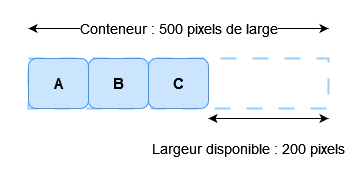
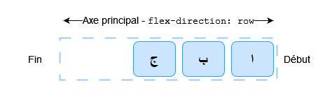

{{CSSRef}}
Une des raisons qui ont poussé à l'adoption des boîtes flexibles est la présence d'outils d'alignement enfin corrects pour le Web. On pouvait ainsi enfin centrer une boîte sur un axe vertical. Dans ce guide, nous verrons dans le détail comment fonctionnent les propriétés d'alignement et de justification relatives aux boîtes flexibles.
Afin de centrer notre boîte, nous allons utiliser la propriété align-items afin d'aligner l'objet sur l'axe secondaire (cross axis en anglais). Dans notre exemple, cet axe est l'axe de bloc et est orienté verticalement. La propriété justify-content est quant à elle utilisée pour aligner l'objet sur l'axe principal (main axis en anglais) (ici l'axe principal est l'axe en ligne qui s'étend horizontalement).
Vous pouvez étudier le code de l'exemple suivant et modifier la taille du conteneur ou d'un élément imbriqué : l'élément imbriqué sera toujours centré.
{{EmbedGHLiveSample("css-examples/flexbox/alignment/intro.html", '100%', 700)}}
Voici les propriétés que nous étudierons dans ce guide :
Nous verrons également comment les marges automatiques peuvent être utilisées dans l'alignement des boîtes flexibles.
Note : Les propriétés d'alignement du module de spécification CSS Flexbox ont été placés dans leur propre spécification : CSS Box Alignment Level 3. Cette dernière remplacera à terme les propriétés définies dans le module Flexbox de niveau 1.
Les propriétés align-items et align-self permettent de gérer l'alignement des éléments flexibles sur l'axe secondaire.
Prenons un exemple simple : nous ajoutons display: flex à un conteneur qui contient trois objets. Tous s'étirent afin d'être aussi grands que le plus grand des éléments car celui-ci définit la taille du conteneur sur l'axe secondaire. Si le conteneur flexible possède une hauteur définie, les objets qu'il contient s'étireront pour atteindre cette taille, quel que soit le contenu dont ils disposent.


Les éléments obtiennent la même hauteur à cause de la valeur initiale de align-items qui contrôle l'alignement sur l'axe secondaire. Cette valeur initiale est stretch (qui indique que les objets du conteneur doivent être étirés sur l'axe).
Voici les valeurs disponibles pour aligner les objets :
align-items: flex-startalign-items: flex-endalign-items: centeralign-items: stretchalign-items: baselineDans l'exemple qui suit, la valeur d'align-items est stretch. Vous pouvez essayer les autres valeurs afin de voir comment les objets s'alignent dans le conteneur.
{{EmbedGHLiveSample("css-examples/flexbox/alignment/align-items.html", '100%', 520)}}
align-selfLa propriété align-items définit la valeur de la propriété align-self pour l'ensemble des objets flexibles. Cela signifie qu'on peut utiliser la propriété align-self de façon explicite, sur un élément donné, afin de préciser son alignement. La propriété align-self prend en charge les mêmes valeurs que align-items ainsi qu'un mot-clé auto qui reprendra la valeur définie sur le conteneur flexible.
Dans le prochain exemple, le conteneur flexible a align-items: flex-start, ce qui signifie que les éléments sont tous alignés au début de l'axe secondaire. On utilise le sélecteur first-child afin de cibler le premier élément fils pour lequel on indique align-self: stretch ; un autre élément a été sélectionné via la classe selected et est paramétré avec align-self: center. Vous pouvez modifier la valeur de align-items ou changer les valeurs d'align-self sur les éléments afin d'observer le fonctionnement.
{{EmbedGHLiveSample("css-examples/flexbox/alignment/align-self.html", '100%', 650)}}
Jusqu'à présent, les exemples fonctionnaient avec flex-direction valant row et avec un langage dont les lignes progressent du haut vers le bas. Cela signifie que l'axe principal est une ligne horizontale et que l'axe secondaire est une ligne verticale dirigée vers le bas.
Si on passe flex-direction à column, align-items et align-self aligneront les éléments à gauche et à droite.

Vous pouvez manipuler cet exemple qui reprend le même code que l'exemple précédent avec la seule exception que flex-direction vaut ici column.
{{EmbedGHLiveSample("css-examples/flexbox/alignment/align-self-column.html", '100%', 730)}}
align-contentJusqu'à présent, nous avons aligné les éléments ou un élément donné dans la zone définie par le conteneur flexible. Si on a un conteneur qui s'étend / se divise sur plusieurs lignes, on pourra utiliser la propriété align-content afin de contrôler la distribution de l'espace entre les lignes. La spécification décrit cela comme le groupement des lignes flexibles.
Afin qu'align-content puisse fonctionner, il faut un conteneur dont la hauteur est supérieure à celle qui est nécessaire à l'affichage des éléments. Le moteur applique alors les règles sur l'ensemble des éléments et régit l'utilisation de l'espace restant et l'alignement de l'ensemble dans cet espace.
La propriété align-content prend les valeurs suivantes :
align-content: flex-startalign-content: flex-endalign-content: centeralign-content: space-betweenalign-content: space-aroundalign-content: stretchalign-content: space-evenly (cette valeur n'est pas définie dans le module de spécification Flexbox)Dans l'exemple suivant, le conteneur flexible a une hauteur de 400 pixels, ce qui est supérieur à ce qui est nécessaire pour afficher le contenu. align-content vaut space-between ce qui signifie que l'espace disponible sera réparti entre les lignes flexibles dont la première commence en étant adjacente à la ligne de début et dont la dernière est adjacente à la ligne de fin de l'axe secondaire.
Vous pouvez modifier la valeur de align-content afin d'observer comment cette propriété fonctionne.
{{EmbedGHLiveSample("css-examples/flexbox/alignment/align-content.html", '100%', 850)}}
Là encore, on peut passer avec flex-direction: column afin de voir comment les propriétés se comportent sur les colonnes. Là aussi, il faut suffisamment d'espace le long de l'axe secondaire afin qu'il y ait de l'espace libre à répartir.
{{EmbedGHLiveSample("css-examples/flexbox/alignment/align-content-column.html", '100%', 860)}}
Note : La valeur space-evenly n'est pas définie dans la spécification relative aux boîtes flexibles et a été dernièrement ajoutée à la spécification sur l'alignement des boîtes. Cette valeur est donc moins prise en charge par les navigateurs que les autres mots-clés.
Vous pouvez consulter la documentation sur {{cssxref("align-content")}} pour en savoir plus, notamment sur la compatibilité des navigateurs.
Nous avons pu voir comment fonctionne l'alignement sur l'axe secondaire. Concentrons-nous désormais sur l'alignement relatif à l'axe principal. Ici, une seule propriété est disponible : justify-content. En effet, sur cet axe, les éléments sont gérés comme un seul groupe. Avec, justify-content on contrôle comment l'espace disponible est réparti s'il y a plus d'espace que nécessaire pour afficher les objets.
Dans l'exemple initial avec display: flex appliqué au conteneur, les éléments formaient une ligne qui commençait au début du conteneur. Cela provient de la valeur initiale de justify-content qui est flex-start. Avec cette valeur, tout l'espace disponible est placé à la fin, après les éléments.

La propriété justify-content prend en charge les mêmes valeurs que align-content.
justify-content: flex-startjustify-content: flex-endjustify-content: centerjustify-content: space-betweenjustify-content: space-aroundjustify-content: stretchjustify-content: space-evenly (ce mot-clé n'est pas défini dans la spécification CSS sur les boîtes flexibles)Dans le prochain exemple, justify-content vaut space-between. L'espace disponible après l'affichage des éléments est alors distribué entre les éléments et le premier élément est adjacent à la ligne de début et le dernier est adjacent à la ligne de fin.
{{EmbedGHLiveSample("css-examples/flexbox/alignment/justify-content.html", '100%', 480)}}
Si l'axe principal suit la direction de bloc (orthogonale au sens d'écriture) car flex-direction est paramétré avec la valeur column, justify-content distribuera l'espace selon cet axe tant que l'espace du conteneur flexible est suffisant.
{{EmbedGHLiveSample("css-examples/flexbox/alignment/justify-content-column.html", '100%', 880)}}
Rappelons ici qu'avec ces méthodes d'alignement, flex-start et flex-end respectent le mode d'écriture utilisé. Si on utilise justify-content avec la valeur start pour un contenu écrit en anglais (un mode d'écriture de la gauche vers la droite), les éléments commenceront à gauche du conteneur.

Mais si le contenu est écrit en arabe (un mode d'écriture de la droite vers la gauche), les éléments démarreront à la droite du conteneur.

Dans l'exemple qui suit, on indique explicitement la valeur rtl pour la propriété display afin de forcer un mode d'écriture de droite à gauche. Vous pouvez retirer cette déclaration ou modifier la valeur de justify-content afin de voir comment les boîtes flexibles s'organisent lorsque le début de la ligne est à droite.
{{EmbedGHLiveSample("css-examples/flexbox/alignment/justify-content-writing-mode.html", '100%', 440)}}
flex-directionLa ligne de début sera également modifiée si on change la valeur de la propriété flex-direction, par exemple en utilisant row-reverse à la place de row.
Dans le prochain exemple, on utilise flex-direction: row-reverse et justify-content: flex-end. Pour une langue écrite de gauche à droite, les éléments seront regroupés à gauche. Si vous modifiez les valeurs et passez de flex-direction: row-reverse à flex-direction: row. Vous verrez que les éléments sont désormais groupés à droite.
{{EmbedGHLiveSample("css-examples/flexbox/alignment/justify-content-reverse.html", '100%', 440)}}
Si cela peut paraître déroutant, la règle principale à mémoriser est que, par défaut, si on ne change rien, les éléments flexibles sont organisés dans la direction naturelle de la langue dans laquelle le document est écrit. flex-start correspondra donc à la ligne de début depuis laquelle une phrase démarrerait.

On peut changer l'axe avec flex-direction: column. Dans ce cas, flex-start correspondra à l'emplacement du début du premier paragraphe d'un texte.
Si on utilise flex-direction avec une des valeurs inversée, les éléments seront organisés dans l'ordre inverse (à l'opposé de la disposition naturelle de la langue utilisée pour le document). flex-start correspondra alors à la « fin » usuelle d'une ligne de texte sur une disposition en ligne et au dernier paragraphe sur une disposition organisée sur un axe principal vertical.


Il n'existe pas de propriété justify-items ou justify-self qui permettent d'aligner un élément donné parmi le groupe d'éléments flexibles organisés sur l'axe principal. Toutefois, on peut obtenir un alignement individuel pour séparer un élément ou un groupe d'éléments grâce aux marges automatiques et aux boîtes flexibles.
Un motif fréquent est l'organisation d'une barre de navigation où certains éléments clés sont situés à droite alors qu'un groupe principal est présent à gauche. On pourrait alors penser qu'il s'agit d'un cas d'utilisation pour une propriété comme justify-self… Cependant, si on regarde l'image qui suit et qu'on était capable de modifier justify-self sur l'élément d, cela changerait également l'alignement de l'élément e qui suit, ce qui pourrait ou non être voulu.

Plutôt que cela, on peut cibler le quatrième élément et le séparer des trois premiers en utilisant margin-left: auto. Une marge automatique consommera tout l'espace disponible sur l'axe correspondant.
Dans l'exemple qui suit, on a plusieurs éléments flexibles organisés sur une ligne avec les valeurs de base pour les propriétés liées aux boîtes flexibles. La classe push possède la déclaration margin-left: auto. Vous pouvez observer l'effet obtenu en retirant cette classe ou en l'appliquant à un autre élément.
{{EmbedGHLiveSample("css-examples/flexbox/alignment/auto-margins.html", '100%', 470)}}
Au début de cet article, nous avons vu que les propriétés d'alignement actuellement définies dans le module de spécification CSS de niveau 1 pour les boîtes flexibles étaient également définies dans le module de spécification de niveau 3 pour l'alignement des boîtes. Ce module pourrait voir l'apparition de nouvelles valeurs pour ces propriétés comme le montre d'ailleurs l'introduction de la valeur space-evenly pour les propriétés align-content et justify-content.
Le module de spécification sur l'alignement des boîtes inclut également d'autres méthodes pour créer des espaces entre les objets telles que les propriétés column-gap et row-gap décrites dans le module de grille CSS (CSS Grid). L'inclusion de ces propriétés dans le module d'alignement des boîtes signifie que nous pourrons plus tard les utiliser dans les dispositions avec les boîtes flexibles. Cela signifie qu'il ne sera plus nécessaire d'utiliser des marges afin d'espacer des éléments flexibles. Firefox 63 devrait implémenter les propriétés gap pour les dispositions flexibles.
Lorsque vous explorez les différentes méthodes d'alignement relatives aux boîtes flexibles, n'hésitez pas à étudier ce qui est disponible avec une disposition en grille (CSS Grid Layout). En effet, ces deux spécifications utilisent les propriétés d'alignement qui sont désormais détaillées dans la spécification sur l'alignement des boîtes. Vous pouvez en savoir plus sur le fonctionnement de ces propriétés sur une grille grâce à cet article. Une page récapitulative (en anglais) est également disponible pour comparer le fonctionnement de l'alignement par rapport à ces différentes spécifications : Box Alignment Cheatsheet.